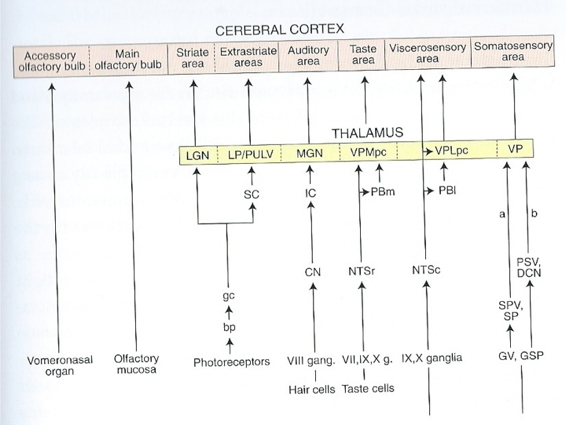
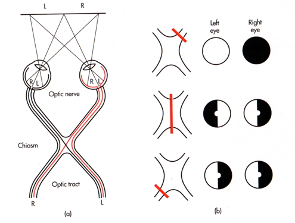
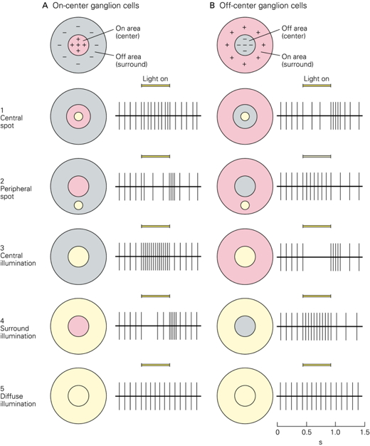
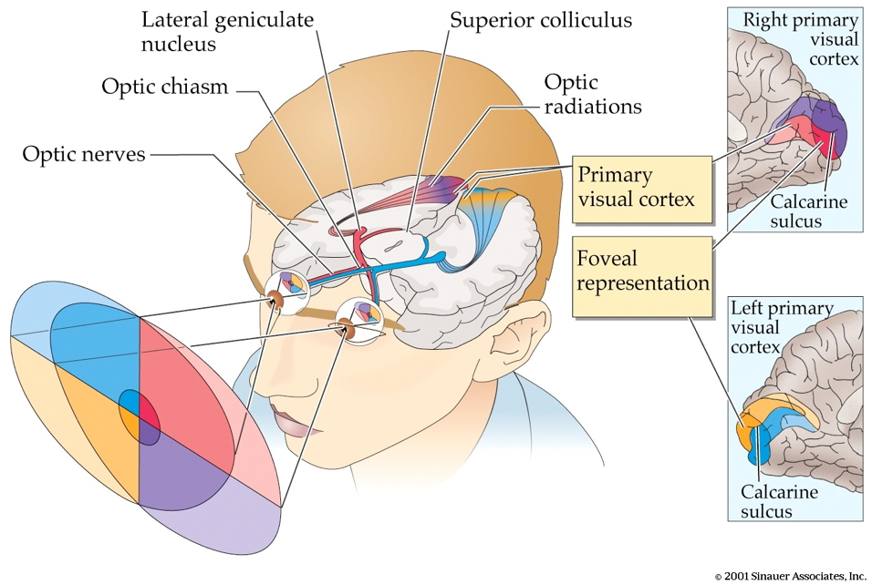
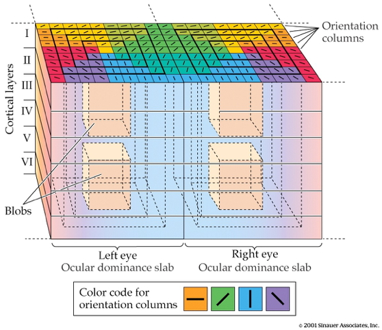

511-perception
Rick Gilmore
2021-10-19 08:06:37
- Fun
- Principles of sensation & perception
- Senses as (perception/action) systems
- Perception/action system dimensions
- From world to brain
- Features of sensory signals
- Case study: Vision
- References
Fun
Principles of sensation & perception
Senses as (perception/action) systems


Source: Amazon


Source: Swanson

Source: Swanson, 2005
Smartphone as metaphor
- Accelerometer
- Gyroscope
- Magnetometer
- Proximity sensor
- Ambient light sensor
- Barometer
- Thermometer
- Mic
- Camera
- Radios (Bluetooth, wifi, cellular, GPS)
Perception/action system dimensions
- Interoceptive
- Body position, movement, posture
- Internal status: hunger, thirst, arousal, discomfort/pain, etc.
- Exteroceptive
- Layout of environment, contents
Questions for interoception
- Tired or rested?
- Well or ill?
- Hungry or thirsty or sated?
- Stressed vs. coping?
- Emotional state?
Questions for exteroception
- Who/What is out there?
- Animate/inanimate?
- Conspecific (same species)/non?
- Threat/non?
- Familiar/un?
- Mate/non? or Friend/not?
- Food source/non
- Where is it?
- Distance
- Proximal
- Distal
- Elevation, azimuth
- Coordinate frames
- Self/ego (left of me)
- Object (top of object)
- Allo/world (North of College)
- Distance
- Where moving?
Questions for action
- What kind of response?
- External
- Move body
- Approach/avoid/freeze
- Signal/remain silent
- Manipulate
- Move body
- Internal
- Change physiological state
- External
- Speed, quality, direction of response
From world to brain

| Realm | Domain |
|---|---|
| \(W\) | The world |
| \(B\) | The body |
| \(N\) | The nervous system |
| \(M\) | The mind |
Properties of the world
- Behaviorally relevant conditions, events, and entities…
- Generate patterns…
- Chemical
- Photic/electromagnetic
- Mechanical/acoustic
- That specialized sensors detect
- Neural circuitry processes
More than 5 sensory channels

- What is the energy/chemical channel?
- Different energy/chemical channels carry different types of information
- What is out there
- Where it’s located
- Different energy/chemical channels convey information at different rates
- Information about behaviorally relevant dimensions often signaled by multiple sources
Vision
- Source: Electromagnetic radiation
- Reflected from surfaces
- What is it?
- Shape, size, surface properties (color, texture, reflectance, etc.)
- Wavelength/frequency, intensity
- Where is it?
- Position: Left/right; up/down on retina
- Near/far: retinal disparity, interposition, height above horizon…
- Orientation, motion
Audition
- Source: Mechanical vibrations in air or water
- What is it?
- Pattern of frequencies, amplitudes, durations
- Where is it?
- Left/right or up/down: Interaural time/phase, intensity differences, pinnae filtering
- Motion: Frequency shifts via Doppler effect
Chemosensation
- Source: Chemicals in mouth, nasal cavity
- What is it?
- Mixtures of chemicals
- Where is it?
- Left/right; up/down; near/far via intensity gradients
Somatosensation
- Source: Thermal or mechanical stimulation (vibration/pressure) of skin
- What is it?
- Shape, size, smoothness, mass, temperature, deformability: Pattern of stimulation
- Where it it?
- Pattern of cutaneous receptors on skin
Interoception
- Hunger/thirst
- Receptors for nutrient, fluid levels
- Energy levels
- Receptors for hormones, NTs
- ANS responses
- Temperature
- Receptors in skin, viscera
- Mating interest
- Receptors for hormones, NTs
- ANS responses
- Body position & movement (proprioception)
- Receptors in muscles, joints, skin
Features of sensory signals
Change across time
- Tonic (sustained) vs. phasic (transient) responses
- Adaptation
- Decline in sensitivity with sustained stimulation
- Most sensory systems attuned to change

- Information propagates at different speeds
- Bigger diameter: Faster
- Denser myelin: Faster
Detect repeating signals
- In space (textures)
- In time
Vision: Spatial frequency/contrast sensitivity
![[[@Roark2019-fx]](http://dx.doi.org/10.1002/mnfr.201801053)](https://onlinelibrary.wiley.com/cms/asset/b8b78ab1-4a85-4add-86cb-d389fb0988b1/mnfr3528-fig-0001-m.jpg)
Audition: Frequencies in sound

Compare (>1) sensors located in different parts of the body
- Eyes
- Ears
- Skin surface
- Nostrils
- Tongue

“Receptive fields”
- Area on sensory surface (e.g., retina, skin) that when stimulated changes neuron’s firing
Tactile


Topographic maps
Auditory: Tonotopic maps

Visual: Retinotopic maps
![[[@dougherty_visual_2003]](https://doi.org/10.1167/3.10.1)](https://arvo.silverchair-cdn.com/arvo/content_public/journal/jov/933499/m_jov-3-10-1-fig001.jpeg?Expires=1637668920&Signature=LC96WRpdIBZ9bh6K~8YsUW6qc0Nccb7GXk6f8O~PV8u0cSqBZ84NNGZJSslPQSkMqjFaJTlyT9De3Ul-erzKVEFstsle3x24-J8wL4wChjSww-IJfzOkA8cbyQZc8sOTvvbt-AbbpTXWu95eHqksTRuqbIGSgKFyqxCW1koirm3sVYqKcmsh35sOgixKkvkYbRL7tMOIkV1Ng8sEasx-T1owZFNEL9DPGnHBzyllMUfvrPvgkv2y067wEbIyDVvM9Xsd15FLQOztcio7nMobeMYtq9sBRVE7qChM6PYOVbANGQKs8nsPRm60jW7VhMp8NVlDNoCttiRP09WEKYBz6w__&Key-Pair-Id=APKAIE5G5CRDK6RD3PGA)
Somatosensory: Somatotopic maps in S1 & M1

Sensivity non-uniform
Two-point touch thresholds

Somatosensory homunculus

Visual acuity non-uniform

Hearing thresholds non-uniform

Processing hierarchical/sequential AND parallel



Case study: Vision
Properties of Electromagnetic (EM) radiation

- Wavelength/frequency
- Intensity
- Location/position of source
- Reflects off some materials
- Refracted (bent) moving through other materials
- Information across space (and time)

Reflectance spectra differ by surface


Optic array specifies geometry of environment

Categories of wavelength specify perception of color
- Eyes categorize wavelength into relative intensities within wavelength bands
- RGB ~ Red, Green, Blue
- Long, medium, short wavelengths
- Color is a neural/psychological construct

The biological camera


Parts of the eye
- Cornea - refraction (2/3 of total)
- Pupil - light intensity; diameter regulated by Iris.
- Lens - refraction (remaining 1/3; focus)
- Retina - light detection
- ~ skin or organ of Corti in inner ear
- Pigment epithelium - regenerate photopigment
- Muscles - move eye, reshape lens, change pupil diameter
Geometry of retinal image
- Image inverted (up/down)
- Image reversed (left/right)
- Point-to-point map (retinotopic)
- Binocular and monocular zones


The fovea

- Central 1-2 deg of visual field
- Aligned with visual axis
- Retinal ganglion cells pushed aside
- Highest acuity vision == best for details
- Acuity varies from center to periphery


What part of the skin is like the fovea?
Photoreceptors in retina detect light

- Rods
- ~120 M/eye
- Mostly in periphery
- Active in low light conditions
- One wavelength range
- Cones
- ~5 M/eye
- Mostly in center
- 3 wavelength ranges


Photoreceptor physiology
- Outer segment
- Membrane disks
- Photopigments
- Sense light, trigger chemical cascade
- Inner segment
- Synaptic terminal
- Light hyperpolarizes photoreceptor!
- The dark current
Retina
- Physiologically backwards
- How?
- Anatomically inside-out
- How?
Retina
- Physiologically backwards
- Dark current
- Anatomically inside-out
- Photoreceptors at back of eye

- Information flows…
- From photoreceptors…
- To Bipolar cells
- <-> and Horizontal cells
- To Retinal ganglion cells
- <-> and Amacrine cells
- To cerebral cortex
Center-surround receptive fields

- Center region
- Excites (or inhibits)
- Surround region
- Does the opposite
- Bipolar cells & Retinal Ganglion cells ->
- Most activated by “donuts” of light/dark
- Local contrast (light/dark differences)
Opponent processing

- Black vs. white (achromatic)
- Long (red) vs. Medium (green) wavelength cones
- (Long + Medium) vs. Short cones
- Can’t really see reddish-green or bluish-yellow
- “Oppose” one another at cellular/circuit level
From eye to brain

- Retinal ganglion cells
- 2nd/II cranial (optic) nerve
- Optic chiasm (\(\chi\) - asm): Partial crossing of fibers
- Nasal hemiretina (lateral/peripheral visual field) cross
- Left visual field (from L & R retinae) -> right hemisphere & vice versa
- Lateral Geniculate Nucleus (LGN) of thalamus (receives 90% of retinal projections)
- Hypothalamus
- Suprachiasmatic nucleus (superior to the optic chiasm): Synchronizes day/night cycle with circadian rhythms
- Superior colliculus & brainstem
LGN

- 6 layers + intralaminar zone
- Parvocellular (small cells): chromatic
- Magnocellular (big cells): achromatic
- Koniocellular (chromatic - short wavelength?)
- Retinotopic map of opposite visual field
From LGN to V1
- Via optic radiations
- Primary visual cortex (V1) in occipital lobe
- Create “stria of Gennari” (visible stripe in layer 4)
- Calcarine fissure (medial occiptal lobe) divides lower/upper visual field
Human V1

![[[@dougherty_visual_2003]](http://dx.doi.org/10.1167/3.10.1)](img/mri-v1-retinotopy.jpg)
- Fovea overrepresented
- Analogous to somatosensation
- High acuity in fovea vs. lower outside it
- Upper visual field/lower (ventral) V1 and vice versa
Laminar, columnar organization

- 6 laminae (layers)
- Input: Layer 4 (remember stria of Gennari?)
- Output: Layers 2-3 (to cortex), 5 (to brainstem), 6 (to LGN)
- Columns
- Orientation/angle
- Spatial frequency
- Color/wavelength
- Eye of origin, ocular dominance


![[[@panichello_predictive_2013]](http://dx.doi.org/10.3389/fpsyg.2012.00620)](img/spatial-freq-fpsyg-03-00620-g003.jpg)
{kind=link}
{kind=link}
{kind=link}
{kind=link}
{kind=link}
{kind=link}
Ocular dominance columns
Beyond V1

- Larger, more complex receptive fields
- Dorsal stream (where/how)
- Toward parietal lobe
- Ventral stream (what)
What is vision for?
- What is it? (form perception)
- Where is it? (space perception)
- How do I get from here to there (action control)
- What time (or time of year) is it?
References
Dougherty, R. F., Koch, V. M., Brewer, A. A., Fischer, B., Modersitzki, J., & Wandell, B. A. (2003). Visual field representations and locations of visual areas V1/2/3 in human visual cortex. Journal of Vision, 3(10), 1–1. https://doi.org/10.1167/3.10.1
Panichello, M. F., Cheung, O. S., & Bar, M. (2013). Predictive feedback and conscious visual experience. Perception Science, 3, 620. https://doi.org/10.3389/fpsyg.2012.00620
Roark, M. W., & Stringham, J. M. (2019). Visual performance in the “real world”: Contrast sensitivity, visual acuity, and effects of macular carotenoids. Molecular Nutrition & Food Research, 63(15), e1801053. https://doi.org/10.1002/mnfr.201801053